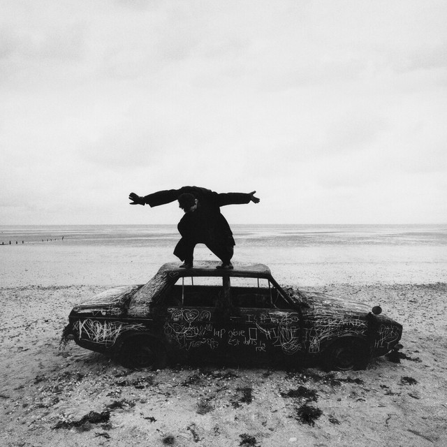
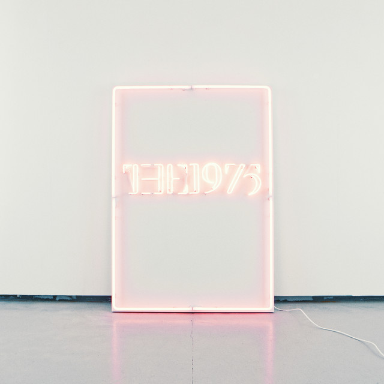
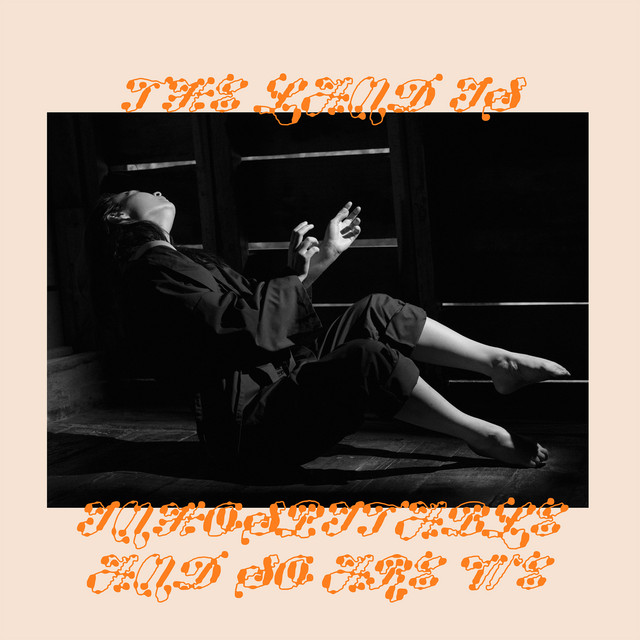

My Beat
A Collection of My Favorite Music
About My Favorite Music
Music has always been a big part of my life. Here, I share my favorite tracks and why they resonate with me. These songs have inspired me and hold a special place in my heart.
My Favorite Artists & Bands
Taylor Swift
Known for her narrative songwriting and genre-spanning discography, Taylor Swift has evolved from country to pop while maintaining her emotional depth and lyrical prowess.
The 1975
This British rock band combines elements of pop, electronic, and indie rock to create a distinctive sound that explores themes of love, technology, and modern life.
Paramore
Led by Hayley Williams' powerful vocals, Paramore has evolved from pop-punk roots to incorporate elements of new wave and synth-pop while maintaining their energetic sound.
Daniel Caesar
With his smooth vocals and emotionally honest lyrics, Daniel Caesar has established himself as a leading voice in contemporary R&B, blending gospel influences with modern production.
Music Categories
R&B
It blends elements of jazz, gospel, blues, and soul, creating a distinctive style that is characterised by its smooth rhythms, emotive vocals, and strong backbeat.
Alternative Music
These are music that falls outside the mainstream, often characterized by independent artists, eclectic sounds, and a willingness to push creative boundaries, encompassing various subgenres like alternative rock, indie, and alternative pop.
-
"Oh Caroline" by The 1975
Album: Being Funny in a Foreign Language (2022)
A vibrant indie pop track with 80s influences and Matty Healy's charismatic vocals.


Pop Punk
It is a rock music genre that blends the fast tempos and energy of punk rock with the catchy melodies and pop song structures, often featuring themes of adolescence and anti-establishment sentiments.

Pop
It is a genre of music characterized by catchy melodies, simple structures, and mass appeal, often found on mainstream radio and in various countries and cultures.
-
"Somebody Else" by The 1975
Album: I like it when you sleep, for you are so beautiful yet so unaware of it (2016)
A synth-pop track with melancholic lyrics about seeing an ex-partner with someone new.
-
"My Love Mine All Mine" by Mitski
Album: The Land Is Inhospitable and So Are We (2023)
A tender, nostalgic track with a waltz-like rhythm and poetic lyrics about eternal love.


Currently On Repeat
These tracks are currently on heavy rotation on my playlist. They've caught my attention with their unique sounds and lyrics that resonate with me.

Album: Phases (2019)
"Heaven and Back" is a sultry and atmospheric track that explores themes of love, desire, and heartbreak. With its hypnotic beats, smooth vocals, and emotionally charged lyrics, the song takes listeners on a journey through the highs and lows of a passionate relationship. The blend of R&B, pop, and alternative influences creates a captivating soundscape that perfectly embodies Chase Atlantic's unique style.